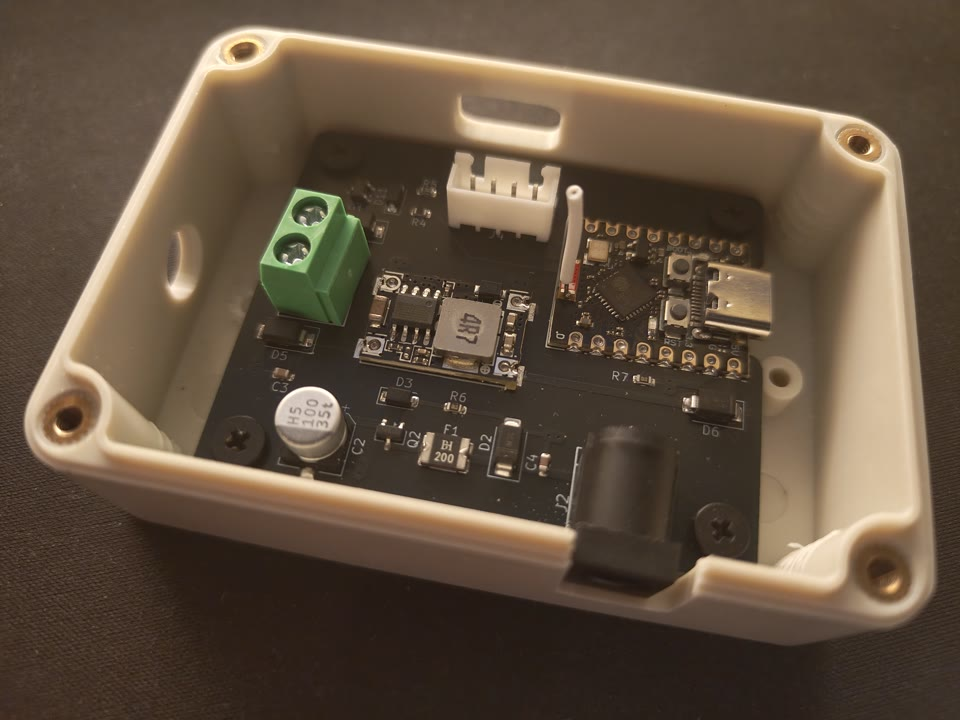
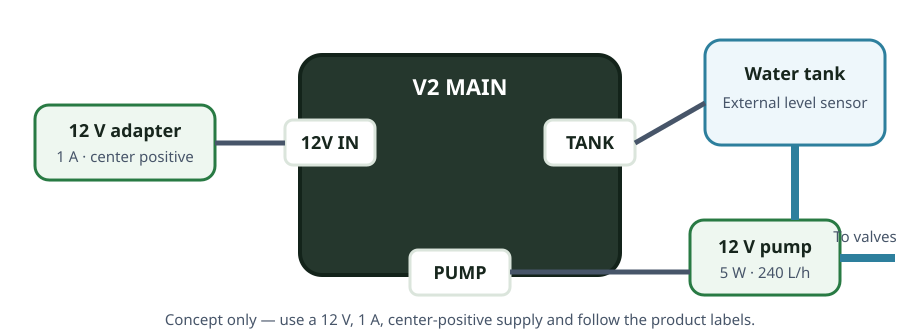
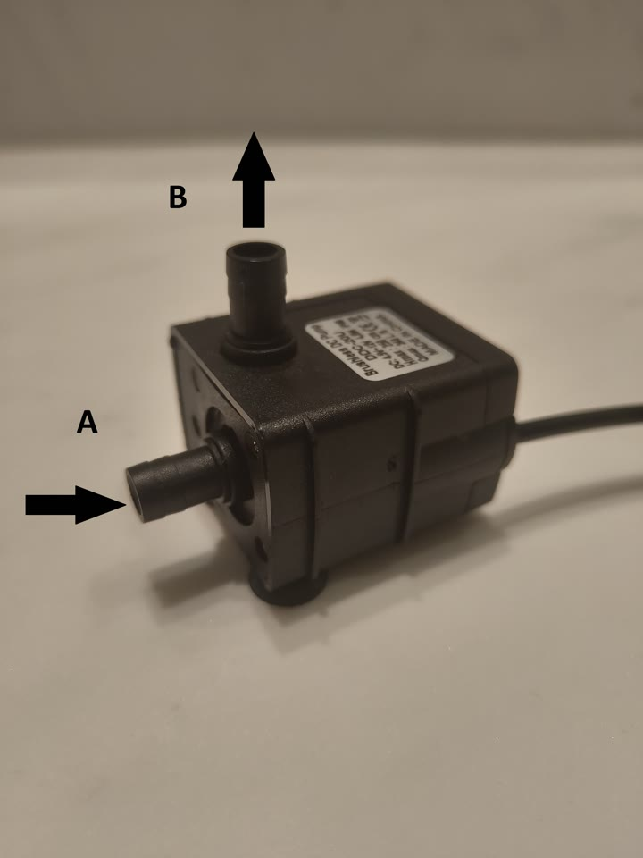
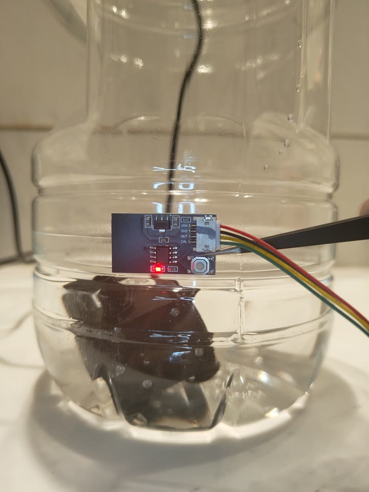
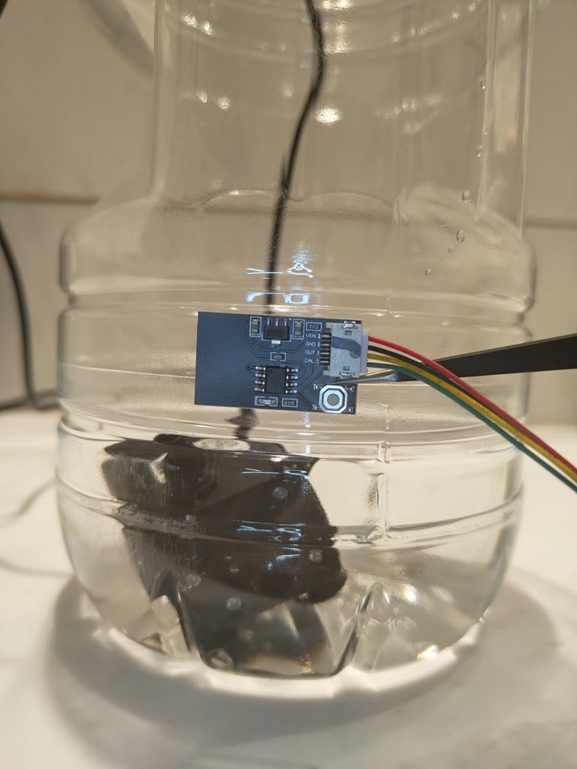
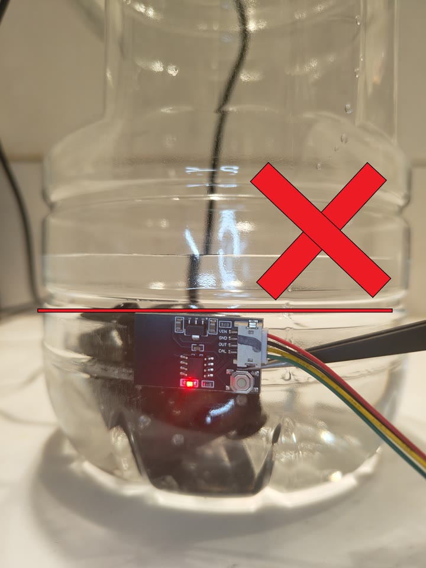
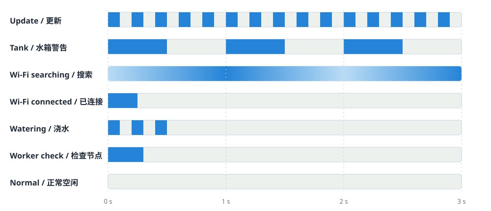

目录
1. 系统概览
V2 主控制器是系统的中心设备，需要持续供电。它提供控制网页、监测水箱、控制 12 V 水泵，并与已经配置的八盆工作节点交换读数和指令。手机或电脑通过 Wi-Fi 打开网页；工作节点通过蓝牙与主控制器通信。
当前设备软件最多可配置八个工作节点。每个工作节点单独处理，因此某个节点无响应时，其他已取得新读数的节点仍可继续检查。

2. 硬件与连接


所需物品
- 已组装并装好设备软件的 V2 主控制器。
- 稳压 12 V、1 A DC 适配器，5.5 mm × 2.1 mm 圆孔插头，中心为正极、外圈为负极。
- 12 V、5 W 水泵。随附水泵标称最大流量 240 升/小时、最大扬程 3 米。
- 随附的外置水位传感器。
- 储水容器、合适的水管与接头，以及已配置的 V2 八盆工作节点。
- 与主控制器位于同一 2.4 GHz Wi-Fi 网络的手机或电脑。

测试和校准水位传感器
传感器连接好并且主控制器通电后，才能进行测试。传感器板上的红灯表示检测结果：该高度有水时红灯亮，水位低于该高度时红灯灭。这个传感器红灯与主控制器的红色电源灯不是同一个灯。


- 粘贴前，先在水箱外壁移动已经通电的传感器。分别在背后有水的位置和高于水面的位置测试，确认红灯能正确亮起和熄灭。
- 检查时手和手指不要靠近传感器。传感器会对人体产生反应，触摸时可能错误地判断为有水。
- 需要校准时，把水箱加水到计划使用的最低水位，把传感器放在该水位线位置，不要触摸感应面。
- 按住校准按钮 2 秒，直到红灯开始闪烁。红灯开始闪烁后，松开按钮，并且在闪烁结束前不要触碰传感器。
- 红灯停止闪烁后校准完成。再次测试高、低水位显示，然后才启用自动浇水。
安装顺序
- 把主控制器和适配器放在可能溅水位置的上方，保持干燥和通风。Wi-Fi/蓝牙天线区域应远离金属和积水。
- 在断电状态下，按已确认的方向连接水位传感器。
- 把水泵进水口装入水箱，并把出水口接至工作节点阀门的供水管。固定所有水管。
- 按已确认的极性把水泵接到水泵输出。
- 给水箱加水，检查所有接头，确认无误后才连接 12 V 适配器。传感器红灯只有在完成此步骤后才会工作。
- 主控制器通电后，按照传感器测试操作。在不触摸感应面的情况下沿水箱外壁移动传感器，确认能正确显示有水和低水位。
- 在壁厚小于 10 mm 的水箱外壁选择最终位置。传感器必须高于水泵，使低水位能在水泵露出水面前停止浇水。清洁并擦干外壁，把传感器牢固粘贴后再次测试。
- 保持自动模式关闭，按第 6 节进行有人看守的手动测试。如发生漏水、不出水、过热、异常声音或流向错误，立即停止。

3. 首次启动与 Wi-Fi 设置
- 给主控制器通电。Wi-Fi 未连接时，蓝色状态灯会每两秒缓慢变亮、再变暗一次。
- 用手机或电脑加入名为
plant-watering-XXXXXX的临时 Wi-Fi。末六位字符用于标识此主控制器。 - 在设置页面选择家中的 2.4 GHz Wi-Fi 并输入密码。在蓝色状态灯单次闪烁表示连接成功前，请留在设备附近。
- 如有需要，让手机或电脑重新连接家庭 Wi-Fi。
- 在浏览器打开
http://plant-watering-XXXXXX.local，其中六位字符与临时设置 Wi-Fi 名称一致。 - 完成工作节点设置与校准之前，保持自动模式关闭。
4. 网页界面
状态区域
| 项目 | 含义 |
|---|---|
| 当前时间 | 本地 24 小时时间、时区偏移和时钟来源。浇水时段按此时间判断。 |
| 水箱水位 | 只有高状态允许水泵运行和自动浇水。低或未连接均视为不安全，会阻止或停止自动浇水及手动水泵。 |
| 系统状态 | 就绪、同步中、浇水中、休眠中或更新中。 |
| 自动模式 | 是否启用按计划自动评估。 |
| 上次/下次同步 | 上次自动数据周期距今时间以及下次周期倒计时；仅在自动模式开启时显示。 |
设置与当前限制
| 设置 | 默认值 | 允许范围与行为 |
|---|---|---|
| 主控制器名称 | 控制器六位 ID | 只使用英文字母或数字时最多 64 个字符；中文和表情符号占用空间较多，因此可输入的个数会少一些。工作节点和花盆名称也使用相同限制。 |
| 语言 | English | 英文或简体中文。 |
| 时区 | UTC+00:00 | UTC−14:00 至 UTC+14:00；界面以 15 分钟为步进。 |
| 自动模式时段 | 00:00–23:59 | 每天的开始和暂停时间。开始时间晚于暂停时间时表示跨夜时段。 |
| 数据同步间隔 | 3600 秒 | 60–2,419,200 秒。控制自动传感器周期和工作节点休眠时间。 |
| 水泵预运行 | 1 秒 | 0–30 秒。自动模式开启阀门前的水泵预运行时间。 |
| 手动水泵超时 | 10 秒 | 1–60 秒。独立“启动水泵”控制的安全定时器。 |
| 自动模式 | 关闭 | 开启后禁用手动控制。 |
| 花盆阈值 | 2000 | 0–4095。数值越高表示土壤越干；读数必须高于阈值才可自动浇水。 |
| 花盆浇水时长 | 5 秒 | 每盆 1–60 秒。 |
| 花盆自动浇水间隔 | 3600 秒 | 每盆 60–2,419,200 秒。该花盆自动浇水成功结束时，开始计算这段等待时间。 |
网页内容多久更新一次
| 网页内容 | 正常更新频率 |
|---|---|
| 主控制器状态：时间、水箱、系统状态、自动模式、计划时间和手动水泵 | 每 3 秒一次。 |
| 工作节点信息：电池、上次联系、信号强度、土壤读数和上次浇水 | 每 5 秒一次。 |
| “调试”页面中的额外诊断信息 | 每 10 秒一次。 |
| “固件更新”页面中的软件版本和更新进度 | 每 2 秒一次。 |
| 保存、删除或重置某项之后 | 约 0.3 秒后额外请求更新一次。 |
输入名称或设置时，网页不会用自动更新的数据覆盖正在输入的内容。离开网页前，请使用相应的应用按钮保存。
主控制器设置使用应用设置保存。工作节点和花盆的修改使用各自的应用按钮或全部应用。存在未保存的修改时不要离开页面。
时钟设置
使用每日时段前先选择时区。按同步时间（NTP）可从互联网设置时钟；离线时也可手动输入当前 HH:MM。互联网时间同步失败不会清除当前时钟。
5. 添加和配置工作节点
- 给工作节点通电并找到其 12 位蓝牙设备编号，网页中称为 MAC 地址。只使用数字 0–9 和字母 A–F，不输入空格或标点。
- 在工作节点区域输入设备编号，可选填名称，然后按添加工作节点。
- 等待主控制器联系该节点。手动模式下通常约每 30 秒联系一次。
- 首次收到回复后，界面显示该节点的八个花盆。检查电池、距上次联系的时间、信号强度和土壤读数。
- 为工作节点和各花盆命名，设置并保存每盆阈值、浇水时长和自动浇水间隔。
工作节点尚未发送第一次读数或传感器不可用时，手动阀门按钮保持禁用。从主控制器删除节点会清除该主机保存的节点名称和花盆设置。把节点转移到其他主控制器前，请按工作节点的配对说明操作。
6. 手动操作
手动模式是默认的设置和测试模式。已配置工作节点保持唤醒，主控制器约每 30 秒联系一次，因此耗电量高于自动模式。
有人看守的水泵与阀门测试
- 确认水箱有水、所有水管已固定、自动模式已关闭。
- 把手动水泵超时设为大于花盆阀门时长，并应用设置。
- 按启动水泵，随后立即按目标花盆的启动阀门。
- 观察完整水路。流向不正确或不出水时立即按停止水泵；否则到达超时后会自动停止。
- 每次只测试一个通道，并记录出水量。
7. 自动操作
主控制器按以下顺序工作。某项检查未通过时会跳过该花盆，其他工作节点和花盆仍可继续检查。
- 自动模式：必须开启。
- 数据同步间隔：计时到期后，主控制器逐一联系各工作节点。例如设为 3600 秒，表示约每小时一次。只使用本次检查中新收到的读数；无响应的工作节点会被跳过。
- 自动模式开始/暂停时间：主控制器的本地时间必须位于每日时段内。例如 07:00 至 22:00 表示只允许白天浇水。开始时间晚于暂停时间时表示跨夜时段。
- 花盆自动浇水间隔：该花盆距上次自动浇水完成必须已过足够时间。例如 21600 秒表示至少六小时。此条件只在数据同步周期检查，手动测试阀门不会重新计算该时间。
- 水箱水位：必须显示为高。
- 花盆阈值：传感器必须已连接，并且新读数高于此设置。数值越高表示土壤越干。例如阈值设为 2000 时，读数 2200 可以浇水，1800 不可以。
- 水泵预运行：至少一个花盆通过全部检查时，水泵先单独运行这段时间。默认值为 1 秒。
- 花盆浇水时长：每个选中阀门按照各自保存的时长依次打开。浇水完成、达到安全超时或水箱变为不安全时，水泵停止。
- 数据同步间隔：周期结束后，工作节点进入低功耗休眠，直到下次计划检查。
8. 土壤与出水量校准
- 把各传感器安装在一致深度，远离花盆边缘和直接出水口。
- 手动把土壤浇透，待多余水分排出后记录稳定的湿土读数。
- 让植物达到可接受的最干状态，记录此时读数。
- 在湿土和干土读数之间选择初始阈值。由于数值越高越干，阈值应高于正常湿土值且不高于可接受的最干值。
- 关闭自动模式，进行有人看守的 5 秒阀门测试并测量出水量。
- 小幅调整浇水时长。每次修改后检查排水、溢流和水泵超时。
- 先观察多个自动周期，再让系统无人值守运行。每盆分别校准。
9. 主控制器状态 LED
主控制器有两个灯。红色电源灯在设备有电时会一直亮；受软件控制的蓝色状态灯使用下表灯效。以下灯效说明和图示全部指蓝灯。
多个状态同时存在时，灯会按以下优先顺序显示最前面的状态：
软件更新›水箱低水位›Wi-Fi 状态›浇水›检查工作节点›空闲
| 灯效 | 含义 | 操作 |
|---|---|---|
| 熄灭 | 正常空闲。 | 无需操作。 |
| 每 2 秒缓慢变亮、再变暗一次 | 等待 Wi-Fi 设置、首次连接或重新连接。 | 完成 Wi-Fi 设置或检查路由器。 |
| 短闪一次 | Wi-Fi 刚刚连接成功。 | 无需操作。 |
| 每秒长闪一次：亮半秒、灭半秒 | 水箱为低水位。 | 补水并检查水位传感器。 |
| 快速闪三次后熄灭；每 3 秒重复 | 正在浇水或手动水泵已开启。 | 观察正常水流。 |
| 中等长度闪一次后熄灭；每 3 秒重复 | 正在检查工作节点。 | 等待检查结束。 |
| 持续快速闪烁，约每秒闪 5 次 | 主控制器或工作节点正在更新设备软件。 | 不要断电。 |

10. 软件更新
网页中此功能称为固件更新。“固件”就是保存在主控制器或工作节点内部的软件。
更新主控制器
- 从主页底部打开固件更新。
- 在主控制器区域选择正确的主控制器更新文件（文件名以
.ota结尾），然后按上传固件。 - 确认安装，等待文件上传、检查和主控制器重启。不要断电。
- 重新打开网页并确认已安装版本。计划内重启后自动模式保持关闭。
更新工作节点
- 在工作节点固件区域上传一次正确的工作节点更新文件（文件名以
.ota结尾）；主控制器会检查并保存此文件。 - 在工作节点列表中，按目标节点旁的更新。
- 检查、连接、传输、验证、重启和重新连接期间，让两台设备保持供电并靠近。
- 确认目标节点上报新版本后再开始更新另一个节点。
主控制器会检查文件是否适用于正确的设备类型和型号、文件是否损坏，以及软件版本是否允许。不能重复安装当前版本，低于允许最低版本的文件会被拒绝。禁止尝试使用其他设备的文件。
11. 重置与清除 Wi-Fi
| 控制项 | 清除内容 | 后续操作 |
|---|---|---|
| 清除 Wi-Fi 信息 | 仅清除保存的 Wi-Fi 名称和密码。 | 当前连接可能保持到重启。关闭后重新开启或复位主控制器，才能再次进入 Wi-Fi 设置。 |
| 重置所有设置 | Wi-Fi 名称/密码、主控制器设置、工作节点列表、名称、阈值、时长、保存的时钟信息和自动模式状态。 | 重启并重新设置 Wi-Fi，然后重新添加和校准全部工作节点。 |
| 主控制器复位/重启 | 不会清除已保存设置。 | 启动后重新连接并确认自动模式为关闭。 |
12. 故障排查
| 现象 | 检查项目 |
|---|---|
| 无法打开网页 | 如果地址之前可用，请重启主控制器并等待 Wi-Fi 重新连接后再试。如果从未可用，请确认手机连接同一个 Wi-Fi、关闭 VPN，并检查路由器是否阻止组播。必要时联系支持人员。 |
| 蓝色状态灯一直缓慢明暗变化 | 主控制器未连接 Wi-Fi。检查路由器电源、距离、网络名称和密码；必要时清除已保存的 Wi-Fi 信息并重新开始设置。 |
| 水箱显示低或未连接 | 自动浇水要求高状态。补水并检查传感器位置、接头、方向和接线，禁止绕过此条件。 |
| 工作节点数据始终不更新 | 核对 12 位蓝牙设备编号、工作节点电源/电池、距离和遮挡。关闭自动模式并至少等待一个约 30 秒的联系周期。 |
| 自动浇水不启动 | 检查自动模式、本地时间/时区、运行时段、花盆所需等待时间、水箱为高、工作节点返回了新读数、传感器已连接以及读数高于阈值。 |
| 阀门动作但水泵不转 | 手动模式下两项控制独立。单独启动水泵，并确保超时时间大于阀门时长。 |
| 水泵运行但没有水 | 立即停止。检查水位、水泵排气、进出水方向、水管折弯、漏气、堵塞和阀门通道。控制器无法检测水泵健康状态。 |
| 出水量不正确 | 按实测体积重新校准时长，并确认传感器、阀门和花盆编号一致。检查电压、水管长度和阻塞。 |
| 软件更新被拒绝 | 关闭自动模式，等待系统空闲，选择适用于正确设备类型和型号的文件，并确认不是当前版本且不低于最低允许版本。 |